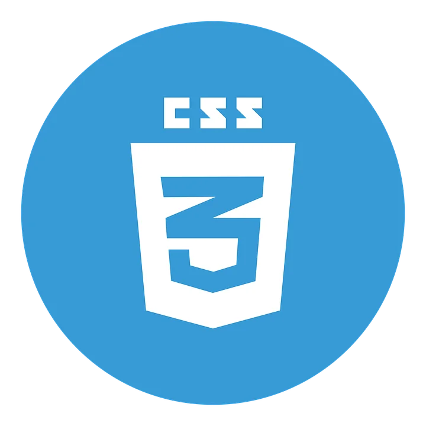
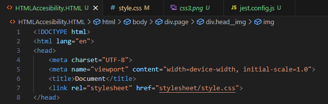
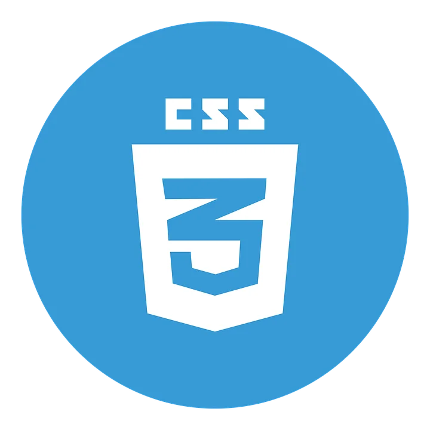
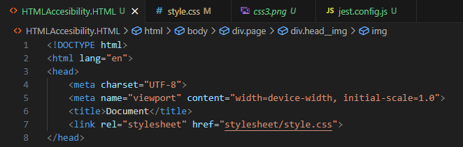

Accessibility page - våre tanker og avgjørelser
 



Denne siden er laget for å kunne gå i dybden på hvilke avgjørelser vi har tatt for å optimalisere vår nettside. Vi ønsker å begrunne valg av kode, struktur og design ved hjelp av HTML og CSS, og vise til testing gjennomført for kvalitetssikring av kodingen
Gruppen vår har lagt stor vekt på tilgjengelighet i utformingen av nettsidene. Dette for å sikre at innholdet er brukervennlig for alle. For at nettsiden er sånn som den er nå, har vi skrevet inn media queries som tilpasser designet til ulike skjermstørrelser, slik at det fungerer både for små og store skjermer. For bildene har vi brukt max-width: 100% slik at bildene skalerer seg og aldri overskrider sin tilgjengelige "container". I tillegg har vi tatt med flere responsive grids og flexbox for layout, som gir en struktur der de justerer elementenes plassering og størrelse basert på skjermens bredde. Dette sikrer seg at nettsiden er oversiktlig, lett navigerbar og leselig uansett hvilken enhet som brukes.


Test av scaling
Vi ønsket å lage en nettside som var responsiv og estetisk for laptop, mobil og desktop. For å kunne se hvordan nettsiden vår ville bli påvirket under scaling (feks ved bruk av mobil), valgte vi å kjøre gjennom tester som sammenliknet layout samt skala på ytelsesproblemer. Vi fant en nettside vi mente ga oss den feebacken vi trengte for å få et helhetslig inntrykk av at koden vår fungerte som ønsket. Nettsiden heter pagespeed, og resultatet kan du se i bildene ovenfor. For å teste layout på desktop valgte vi å gjøre en manuell test ved å koble oss opp på en desktop og se scalingen selv.
Tilgjengelighet ved bruk av fargevalg og kontrast
Vi har brukt blå gradientbakgrunn med hvit tekst på. Ved bruk av dette skaper det en god kontrast mellom tekst og bakgrunn slik at det blir en god lesbarhet.
Headingene og footerene bruker høy kontrast med hvit tekst på blå gradientbakgrunn eks: (background-image: linear-gradient(to right, #4b9cd3, #0077cc) i .bar og .footer). I headeren har vi laget en "class" som heter .bar__link. Alle linkene i headeren har hvit bakgrunn. Ved bruk av disse fargene hjelper det brukere med redusert syn å forstå elementer som er interaktive.
Tilpasning av tekstlesbarhet
Vi har gjort noen endringer med tekststørrelsen og linjehøyder på enkelte seksjoner i nettsiden. Overskrifter som .page__heading--style har store skrifttyper (2rem for å fremheve viktige seksjoner). Vi har brukt "paragraphs" i tekster i en lettlest størrelse (1.2rem), samtidig som vi har valgt å bruke linjehøyden 1.5 på enkelte steder som eksempel: .footer__tableMiddle--style. Vi valgte disse kodene fordi det forbedrer lesbarheten når det er mange tekstblokker.
Navigasjonsvennlighet
Vi har gjort navigasjonen for brukere enkelt med både mus og tastatur. Dropdown-menyen i .bar__dropdown gjør bruk av :focus:within og :hover for å vise innhold. Dette sikrer at tastaturbrukere kan navigere effektivt uten mus. Vi har testet dette med tab-knappen. Hover-effekter, som eks: .bar__link:hover, gir visuelt forståelse som indikerer interaktive elementer
Tilrettelegging for tastaturbrukere
For brukere som navigerer med tastatur, er det lagt til fokus i .bar__dropdown:focus-within som viser skjulte menyer. Dette er spesielt nyttig i hovedmenyer slik at tastaturbrukere kan navigere lett.
Responsiv Design
For å sikre tilgjengelighet på forskjellige skjermer, tilpasser designet seg gjennom media queries. Vi har brukt media queries for alle brukere av ulike skjerm.